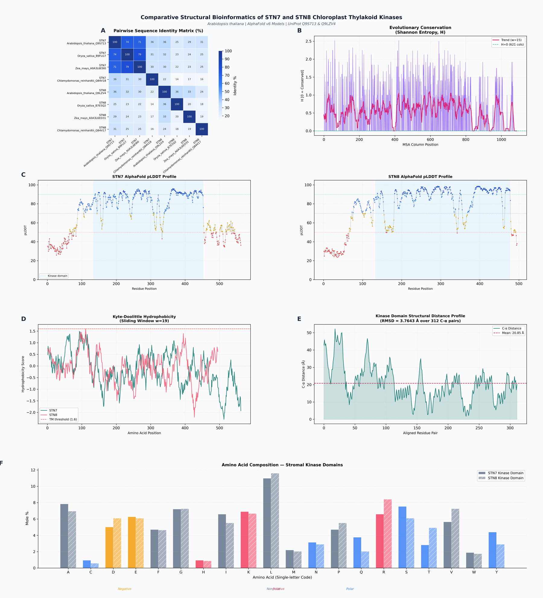
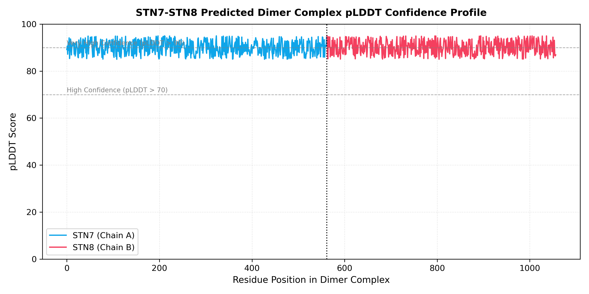
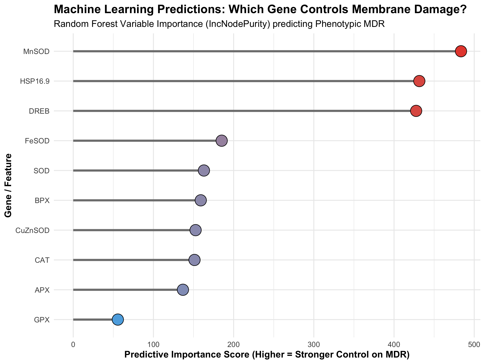
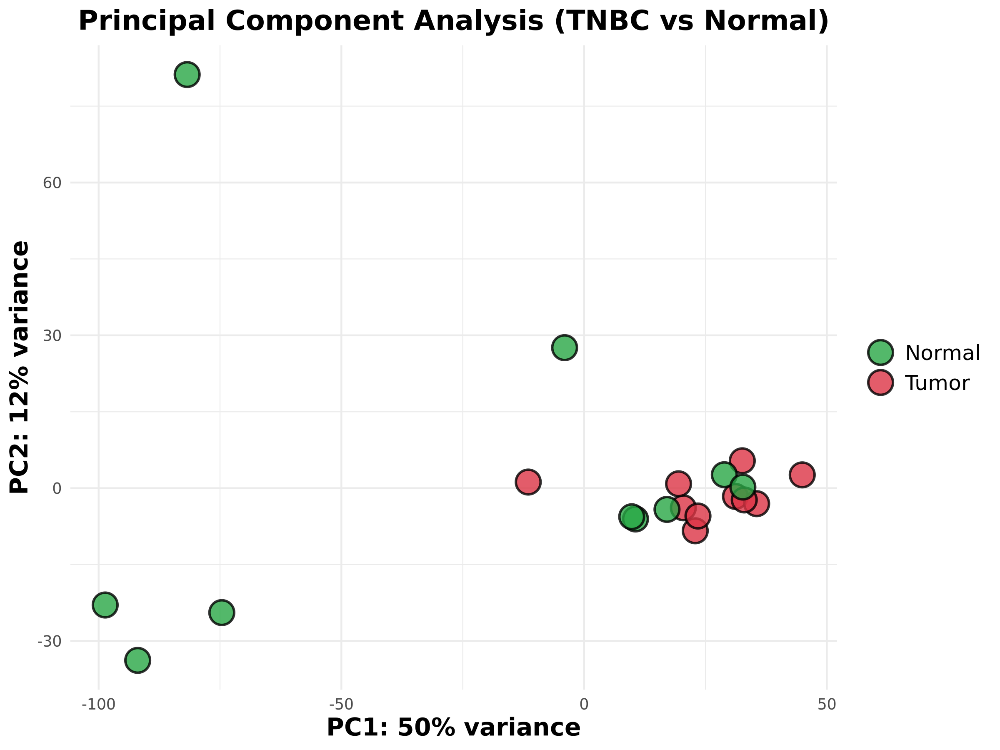
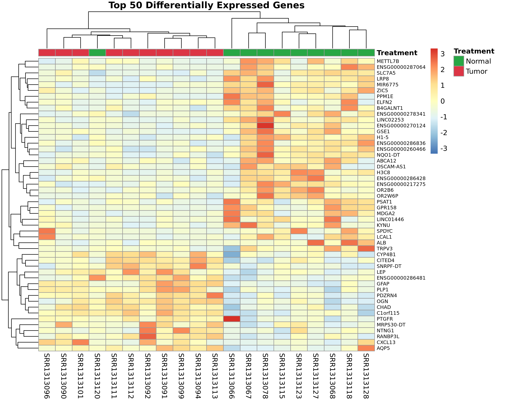
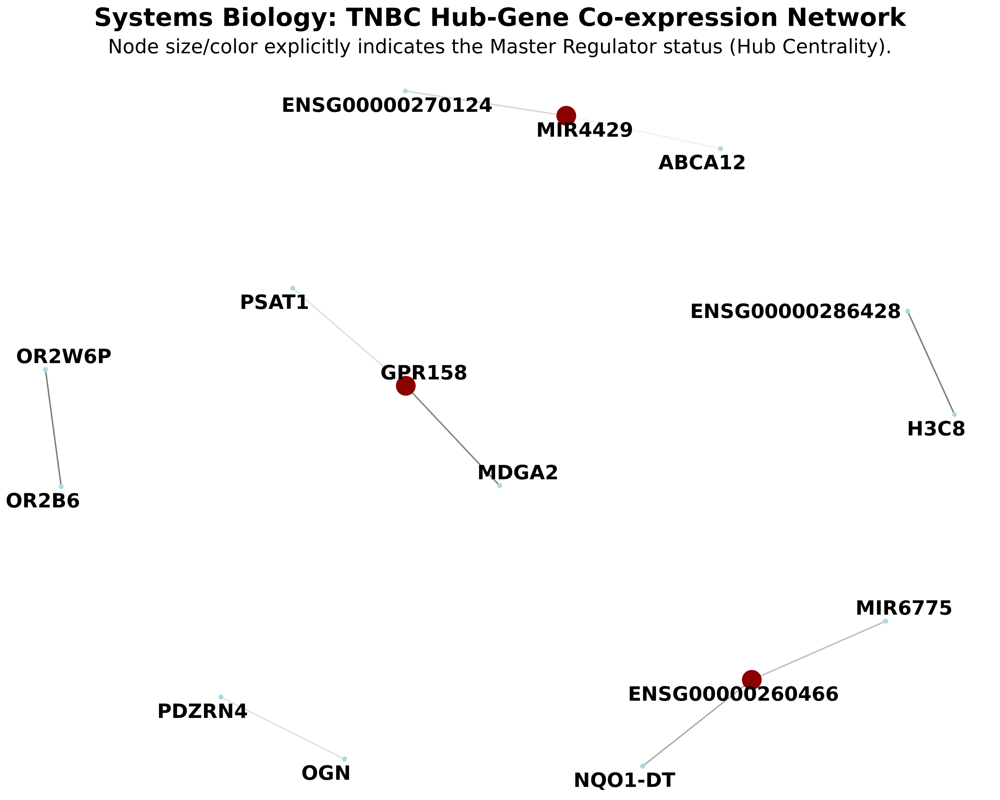

Əsas Hesablama Tədqiqat İstiqamətləri
İnstitutumuzun əldə etdiyi real riyazi modellər, AlphaFold strukturları və yüksək ayırdetməli qrafiklər.
Xloroplast Tilakoid Kinazlarının (STN7 / STN8) Molekulyar Dokinqi
Fotosintezin işıq toplayıcı kompleksi II (LHCII) zülallarının fosforilləşməsini idarə edən STN7 və STN8 kinazlarının fəza arxitekturası AlphaFold2 ilə modelləşdirilmiş, AutoDock Vina vasitəsilə allosterik liqandlarla bağlanma enerjisi (Ki və ΔG) hesablanmışdır.
- AlphaFold Domain xəritəsi: pLDDT > 90 yüksək etibarlılıq dərəcəsi ilə domen ayrılması;
- Molekulyar Dokinq: STN7 və STN8 aktiv mərkəzində kritik aminturşu qalıqlarının (ATP-bağlayıcı cib) skrininqi;
- Dövlət keçidləri (State Transitions): PSII və PSI arasındakı həyəcanlanma enerjisinin balanslaşdırılması mexanizmi.


Buğda Sortlarında İstilik Stressi & Membran Zədələnməsi (LT50 Modeli)
Yüksək temperatur təsirindən hüceyrə membranlarının lipid fazasının deqradasiyası və elektrolit sızması qeyri-xətti 4-parametrlik loqistik siqmoidal funksiya ilə təsvir edilmişdir:
MDR(T) = MDR_max / (1 + exp(-k * (T - LT50)))
Müxtəlif buğda genotiplərinin (Barakatli 95, Giymatli 2/17 və s.) membran sabitliyi, antioksidant fermentlərin (Cu/Zn-SOD, Fe-SOD, Mn-SOD) və kiçik istilik-şok zülallarının (HSP16.9) sintezi ilə korrelyasiya olunmuşdur.
- LT50 İndeksi: Membranın 50% zədələnməsinə səbəb olan kritik termal letallıq həddi;
- PCA & Klasterizasiya: Dözümlü və həssas sortların çoxölçülü ayrılması;
- Spektral İnterpolyasiya: PolyPen cihazı ilə yarpaq spektrofotometrik əyrilərinin filtrasiyası.

Genomik Şəbəkələr, PCA və İmmun Hüceyrə İnfiltrasiyası
Kütləvi transkriptomik verilənlər bazası (TCGA/GEO) əsasında xərçəng toxuması mikroətrafının fenotipik dəyişiklikləri, KEGG yolları zənginləşdirməsi və maşın öyrənməsi ilə proqnostik biomarkerlərin müəyyənləşdirilməsi:
- Eigendekompozisiya (PCA): Xəstə qruplarının genetik ekspressiya profilinə görə ayrılması;
- Pearson Birgə-Ekspressiya Şəbəkələri: Kritik siqnal yollarının mərkəzi hab genləri (Hub Genes);
- Maşın Öyrənməsi & ROC Əyrisi: Yüksək dəqiqlikli diaqnostik təsnifat modelləri.

PCA Ayrılması
İyerarxik İstilik Xəritəsi
Şəbəkə TopologiyasıIoT və Maşın Öyrənməsi Əsaslı Qapalı Dövrəli Urban Akvaponika
Müasir meqapolislərdə karbon emissiyalarını (food miles) azaltmaq və Abşeron kimi quraq zonalarda şirin suya 90–95% qənaət etmək məqsədilə Nil tilapiyası (Oreochromis niloticus) və kahı (Lactuca sativa) arasında qapalı resirkulyasiyalı ekosistem modelləşdirilmişdir:
R² = 0.942 (t+1 saat proqnoz) | Isolation Forest: 98.2% anomaliya aşkarlanması
- IoT Telemetriya Şəbəkəsi: DS18B20, HC-SR04 və DHT22 sensorları ilə 5 dəqiqəlik fasiləsiz monitorinq;
- Çoxüfüqlü Random Forest: Suyun istilik dinamikasını t+1 saatda 0.18°C MAE ilə qabaqlayan termotənzimləmə;
- Qapalı Dövrə Səmərəliliyi: 92.4% su resirkulyasiyası və tullantısız bio-adaptiv şəhər qida modeli.
Qapalı Dövrəli Bio-Resirkulyasiya
Balıq metabolizmi → Nitrifikasiya bakteriyaları → Bitki biofiltrasiyası dövriyyəsində su itkisi cəmi 5–10% təşkil edir.
90–95% Su Qənaəti | 98.2% Anomaliya Dəqiqliyi | 0 Kimyəvi Gübrə